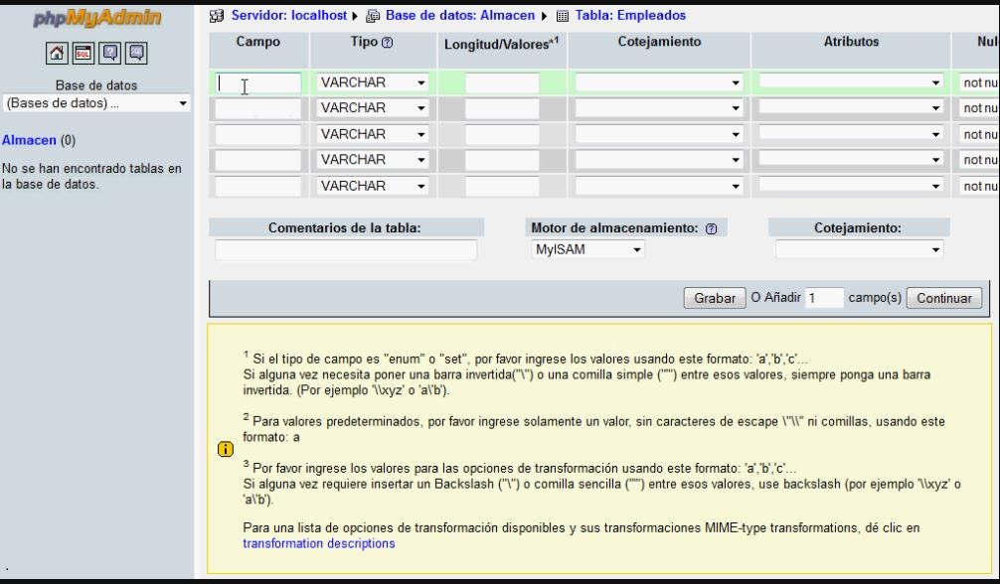
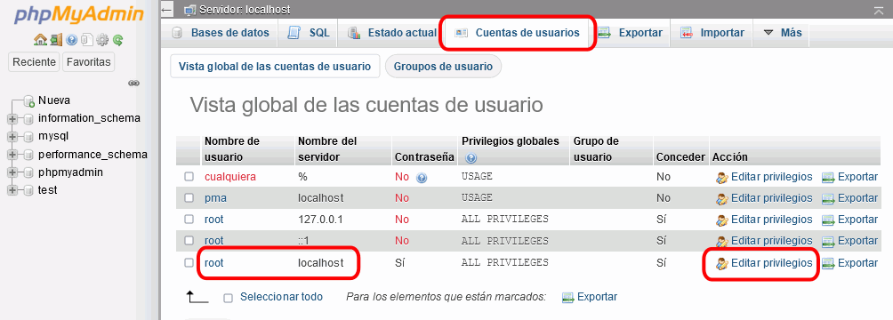

Tras conocer la existencia de las páginas web dinámicas, ¿no sientes deseos de aplicarlas a tu reto? Eso vamos a aprender a hacer a lo largo de este punto. Sin duda el portfolio que has creado es una gran trabajo, pero también es una información que, al igual que un Currículo Vitae, no variará lentamente; por ello se puede crear y mostrar habitualmente de manera estática. Las modificaciones que debas hacerle con tus progresos no van a suponer un constante (en el tiempo) cambio de contenido. Sin embargo, el desarrollo de una web para mostrar las actividades extraescolares de un centro sí supone una reconstrucción continua de la información mostrada, ya que en un centro educativo las actividades extraescolares se van realizando en días diferentes por las distintas clases que suelen ser numerosas. ¡Vamos a aprender cómo poner en práctica esta programación dinámica!
Tras conocer la existencia de las páginas web dinámicas, ¿no sientes deseos de aplicarlas a tu reto? Eso vamos a aprender a hacer a lo largo de este punto. Sin duda el portfolio que has creado es una gran trabajo, pero también es una información que, al igual que un Currículo Vitae, no variará lentamente; por ello se puede crear y mostrar habitualmente de manera estática. Las modificaciones que debas hacerle con tus progresos no van a suponer un constante (en el tiempo) cambio de contenido. Sin embargo, el desarrollo de una web para mostrar las actividades extraescolares de un centro sí supone una reconstrucción continua de la información mostrada, ya que en un centro educativo las actividades extraescolares se van realizando en días diferentes por las distintas clases que suelen ser numerosas. ¡Vamos a aprender cómo poner en práctica esta programación dinámica!
6. Los últimos elementos: acceder a la base de datos
1. ¿Dónde encuentro el contenido?
La última pieza del rompecabezas de la aplicación web dinámica es el contenido real. Hasta ahora has creado páginas web estáticas. Reflexionad en el grupo de trabajo y debatid sobre las siguientes preguntas:
- Con las páginas web estáticas vistas hasta ahora: ¿dónde pensáis que está integrado el el contenido textual que muestra la página? ¿Pueden estar también las imágenes contenidas en la página?
Ahora, vuestro centro educativo, consciente de vuestras plenas capacidades informáticas para la programación web os hace el encargo de desarrollar la web de extraescolares del centro. Este centro el año anterior desarrolló 35 actividades a lo largo del curso, por lo que es esperable un número similar de nuevo. La persona encargada de la web el año anterios incluyó toda la información sobre ellas en una página web estática, pero cuando accedéis a dicha página comprobáis que la visualización no es muy amigable ni atractiva, por lo que decidís utilizar otro diseño HTML más moderno con otra disposición:
- ¿Cuál es el problema si quisiérais modificar el contenido del año anterior?
- ¿Se puede actualizar esa información?¿Es muy laborioso?
Sin duda, la solución a vuestro diseño para este nuevo curso podría ser una página web dinámica, donde el contenido (explicación de cada actividad y resultado) está almacenado en algún lugar fuera de la página web. Así podríais trabajar en HTML sólo el diseño, y rellenar automáticamente todos los datos de los eventos. Pero:
- ¿Dónde se podría almacenar esa información?
- ¿Se os ocurre algún sistema de los que hemos visto a lo largo de esta asignatura?
¡Ánimo y recordad que el debate es la base de las decisiones del equipo de trabajo!
2. Entorno, servicios y...¡acción!
Para iniciarnos en el mundo de la programación web necesitamos una plataforma donde ejecutar nuestras páginas web dinámicas. ¿Y qué debe proporcionarnos esta plataforma? Necesitaremos:
- Un servidor web, donde almacenar y ejecutar nuestra página.
- una base de datos local, donde almacenar la información que recopilará y que mostrará la página.
- Y un procesador del lenguaje de script utilizado. En nuestro caso nos decantamos por utilizar PHP, por lo que necesitaremos un procesador de PHP.
Todo esto nos lo proporciona el servidor web multiplataforma XAMPP: En este punto vas a aprender a instalarlo, ejecutar gracias a él una página con código HTML y PHP, crear una base de datos y ponerle una contraseña que nos proporcionará seguridad y privacidad. ¡Manos a la obra!
Instalación de XAMPP
Xampp es un servidor web local multiplataforma que permite la creación y prueba de páginas web u otros elementos de programación. Es un pack muy completo: viene con todas las herramientas que necesitas para trabajar en tus proyectos (panel de control, bases de datos, graphics draw, servidor apache, filezilla ftp serve); es decir, no tienes que preocuparte por descargar otros programas aparte, ya que vienen incluidos en el link de descarga.
Además es software libre...¡qué más queremos! Vamos a instalarlo y comenzar la experiencia:
Instalación en Windows
En los sistemas Windows, debes realizar estos pasos:
- Dirígete al sitio web de Apache para descargar Xampp. Recuerda descargar la última versión que sea compatible con el sistema operativo que uses.
- A continuación, podrás hacer doble clic en el archivo para que se abra el asistente de instalación. Allí podrás elegir los componentes a instalar, la ubicación donde deseas que se instale el programa y cualquier otro parámetro de instalación del software libre.
- Instalado Xampp en el equipo ya podrás comenzar a ejecutarlo desde el panel de control como cualquier otro programa.
Para mayor claridad, observa este vídeo en el que se explica paso por paso la instalación a realizar y aclarará todas tus dudas:
Recuerda que si lo necesitas puedes activar los subtítulos del video
Instalación en Linux
En los sistemas Educaandos, Xampp ya viene instalado por defecto. No es necesario entonces realizar ninguna actuación de instalación, sólo abrir el programa para su configuración y uso. Para el resto de sistemas Linux:
- Abre la consola de comandos para iniciar con el proceso de instalación.
- Si aún no tienes descargado el programa puedes hacerlo de forma tradicional o valiéndote del comando wget.
- Ingresa el comando: cd /home/tu-usuario/Downloads. Debes reemplazar tu-usuario por el nombre de tu equipo; y si el archivo no está en la carpeta de descargas, deberás reemplazar Downloads por la ubicación.
- Para hacer ejecutable el archivo ingresa el comando: chmod 755 nombre-del-paquete. En nombre-del-paquete coloca el nombre exacto del archivo incluyendo su extensión.
- Comprueba los permisos de instalación con el comando: ls -l nombre-del-paquete.
- Si ya tienes los permisos, inicia el instalador con el comando: sudo ./nombre-del-paquete.
Inmediatamente se abrirá el instalador y podrás elegir los componentes que deseas instalar tal y como se hace en Windows y otros sistemas.
Ejecución de PHP
Ya tienes instalado XAMPP y estás en condiciones de probar tus páginas dinámicas, ya que a partir de ahora, tu equipo funcionará como un servidor web y las páginas HTML que realices y que tengan incluido código PHP podrán ser procesadas y enviadas al cliente que las consulte como una página HTML pura con los cambios dinámicos del código PHP ya implementados. Aprende cómo hacerlo con este vídeo que te explica claramente dónde debes situal los archivos de código y los servicios que debes iniciar para su funcionamiento:
Recuerda que si lo necesitas puedes activar los subtítulos del video
Creación de una BD en XAMPP
XAMPP también nos permitirá crear y utilizar una base de datos (en este caso MySQL) gracias a que trae incluida la utilidad phpMyAdmin. phpMyAdmin es un software gratuito y de código abierto que te permite manejar la administración de MySQL a través de la web. Puedes gestionar fácilmente la base de datos a través de una interfaz gráfica de usuario conocida como phpMyAdmin en este caso.
Crear una base de datos mediante esta utilidad de XAMPP permitirá que nuestra página pueda conectar con la base de datos de forma dinámica para introducir y sacar datos a mostrar en la propia página web. Te lo explicamos paso a paso:
Crea la base de datos
- Para crear una base de datos MySQL en XAMPP, necesitas lanzar primero XAMPP:
- A continuación, navegamos a http://localhost/phpmyadmin y hacemos clic en la pestaña Base de datos. Ahora deberías ver la opción de Crear una base de datos y el campo de entrada para introducir el nombre de la base de datos. Escribe el nombre de la base de datos y pulsa el botón ‘Crear’:

- Desde la lista de tablas, puedes ver tu base de datos. Eres libre de usar esta base de datos donde quieras con la configuración por defecto. Por defecto el HostName es ‘localhost’, el usuario de MySQL es ‘root’ y no tiene contraseña.
Crea una tabla
- En el phpMyAdmin haz clic en la pestaña Estructura. Debajo de la lista de tablas en la parte inferior de la página (si hay tablas, si no solo verás el enlace), haz clic en Crear nueva tabla en la base de datos para comenzar.
- Pondrás el nombre de la tabla y el número de columnas. Después pulsa Go:

- Se abrirá un asistente paso a paso en el que tendrás que rellenar los campos necesarios. En primer lugar, nombra todos los campos y selecciona el tipo correspondiente para cada campo: utiliza el menú desplegable Tipo y rellena un valor para la longitud de cada campo. Asigna un Atributo a cada campo. En el menú desplegable selecciona la opción null y define si el campo especificado es una clave primaria o no. Por último, selecciona el tipo de tabla y el método de cotejo y haz clic en el botón Guardar para finalizar el proceso de creación de la tabla:

Establecer la contraseña
Cuando instalamos el servidor XAMPP en una máquina local, por defecto el nombre de usuario es ‘root’ y la contraseña queda vacía. Al tratarse de un servidor local es por lo que los desarrolladores no establecen ninguna contraseña: es más cómodo para hacer pruebas ágilmente. Sin embargo, cuando instales XAMPP en un espacio web para poner tu página en servicio accesible a todo el mundo, es totalmente indispensable establecer la contraseña de phpMyAdmin en XAMPP, sólo así podrás tener seguridad y privacidad, y proteger tu sitio web de ataques.. Si quieres establecer una contraseña puedes seguir los siguientes pasos:
PASO 1
Inicia el servidor XAMPP haciendo clic en el botón ‘Start’ paralelo al servidor MySQL y Apache como se muestra a continuación. Paralelamente a MySQL en la columna de Acciones, haz clic en el botón ‘Admin’. Esto abrirá una página cuya URL será localhost/phpmyadmin. Sin embargo, puedes abrir directamente esta página simplemente introduciendo esta URL en el navegador.
PASO 2
En la página que se abre, haz clic en la opción «Cuentas de usuario» en la parte superior de la página. Después, pulsa la opción «Editar privilegios» en la opción «Acciones» para el nombre de usuario «root» y el nombre de host «localhost»:

PASO 3
Ahora elige la tercera pestaña ‘Cambiar contraseña’ y escribe tu contraseña en el campo proporcionado, vuelve a escribir la contraseña para confirmarla y finalmente haz clic en la tecla ‘Ir’ para concluir el proceso:

PASO 4
Finalmente, escribe la nueva contraseña y haz clic en Continuar:

3. Insertar datos...extraer datos...¡automatización necesito!
 Más adelante verás que en nuestro reto final crearemos una web que utilizaréis dos tipos de usuarios:
Más adelante verás que en nuestro reto final crearemos una web que utilizaréis dos tipos de usuarios:
- Tú, como administrador de la base de datos, para introducir los datos de las nuevas actividades que se realicen en el centro: para esto necesitarás una página que te muestra un formulario para recoger los datos de las distintas actividades y las inserte en la base de datos.
- Los visitantes de la web, para consultar en la página todas las extraescolares realizadas: para ello, necesitarás que la página recupere los datos de la base de datos y los muestra en la web.
En resumen, necesitas que tu página web realice dos acciones sobre la base de datos: insertar datos en la BD y recoperarlos. ¿Cómo realizarás esto? Mediante código PHP. ¡No es difícil! Para ello te presentamos este ejercicio guiado que te mostrará los comandos necesarios para realizar estas operaciones. Sigue los ejemplos ejecutándolos en tu recién estrenado servidor XAMPP.
En este ejercicio guiado vamos a basar nuestro ejemplo en una base de datos utilizada para almacenar la información de los libros de una biblioteca. Usarás tu web para recopila datos de nuevos libros a añadir y para mostrar después los existentes en la web:
Crea la base de datos y la tabla
Para poder insertar valores en una base de datos y extraerlos posteriormente, tendrás primero que crear dicha base de datos y la tabla donde se almacenarán los datos.
Para esto, recuerda los pasos seguidos en el punto anterior y:
- Crea una base datos llamada "biblioteca".
- Crea una tabla llamada "libros" que contendrá los campos:
- Título: será un campo de tipo texto.
- Autor: será un campo de tipo texto.
- Categoría: será un campo de tipo texto, con valores cerrados a elegir entre: [cómic, novela, educación, poesía, ensayo]
- Año: será un campo de tipo numérico.
- ISBN: será un campo de tipo texto.
Insertar datos: el formulario HTML
Para ingresar datos en una nueva tabla de la base de datos, primero necesitarás una página HTML que recopile esos datos del usuario. El siguiente código HTML hace eso y pasa la información a un script PHP:
<form action="insert.php" method="post">
Usuario: <input type="text" name = "user" /><br/>
Contraseña: <input type="password" name = "pass" /><br/>
Título: <input type="text" name = "field1" /><br/>
Autor: <input type="text" name = "field2" /><br/>
Categoría: <select name="field3">
<option value="comic">Cómic</option>
<option value="novela">Novela</option>
<option value="educacion">Educación</option>
<option value="poesia">Poesía</option>
<option value="ensayo">Ensayo</option>
</select><br/>
Año: <input type="number" name = "field4" /><br/>
ISBN: <input type="text" name = "field5" /><br/>
<input type="submit" />
</form>Investiga las siguientes cuestiones:
- ¿Por qué crees que el campo Contraseña utiliza type=password mientras los demás son type=text?
- ¿Para qué se utiliza la etiqueta select?
- ¿Qué muestra en pantalla el último elemento input?
- Consulta la documentación HTML sobre etiquetas HTML y busca ¿qué efecto tendría utilizar la etiqueta input type="file"? (te será muy útil para el reto)
El código HTML anterior mostrará al usuario 7 campos de texto, en los cuales el usuario puede ingresar datos y un botón Submit (Enviar). Al hacer clic en el botón Submit, los datos enviados por el usuario se pasarán a un script llamado insert.php.
Insertar datos: el script PHP
El script PHP a utilizar para insertar en la base de datos los datos recopilados en el formulario, puede tener una estructura como la siguiente:
<?php
$database = "biblioteca.db";
$username = $mysqli->real_escape_string($_POST['user']);$password = $mysqli->real_escape_string($_POST['pass']);//Conectamos con la BD indicando su nombre y el usuario y la contraseña indicados.$mysqli = new mysqli("localhost", $username, $password, $database);
$field1 = $mysqli->real_escape_string($_POST['field1']);
$field2 = $mysqli->real_escape_string($_POST['field2']);
$field3 = $mysqli->real_escape_string($_POST['field3']);
$field4 = $mysqli->real_escape_string($_POST['field4']);
$field5 = $mysqli->real_escape_string($_POST['field5']);
$query = "INSERT INTO table_name (titulo, autor, categoria, anyo, isbn)
VALUES ('{$field1}','{$field2}','{$field3}','{$field4}','{$field5}')";
//Enviamos el comando SQL
$mysqli->query($query);//Cerramos la conexión a la BD
$mysqli->close();
?>En el código utilizado observa y analiza:
- Las variables en PHP comienzan por $
- El comado real_escape_string del objeto $mysqli (se llama al método del objeto mediante ->) transforma los valores recogidos para poder ser entendidos y utilizados en SQL. A la vez, verifica los datos introducidos en el formulario proporcionando seguridad ante un ataque de inyección de código SQL malicioso.
- Con la cadena $_POST['field1'] almacenamos en la veriable PHP la información del campo ‘field1’ a través del método post proveniente del formulario.
- Con el usuario y la contraseña abrimos la conexión a la base de datos mediante el comando new mysqli. La conexión abierta se almacena en la variable objeto $mysqli.
- Con los valores recogidos en las variables PHP creamos la cadena de inserción SQL como aprendiste en el REA 4 y se almacena en la variable $query.
- Con el comando query del objeto $mysqli lanzamos la consulta sobre la base de datos.
- ¡No olvides cerrar la conexión con close().
- No olvides que este código lo guardarás en un fichero aparte llamado insert.php. Este fichero deberás incluirlo en la misma carpeta (directorio) donde tengas almacenado el fichero .html.
Una vez que el usuario envía la información, el script insert.php la guardará en la tabla de la base de datos. ¡Pon en funcionamiento este código de inserción en la base de datos y genera al menos 3 entradas en la tabla libros!
Recuperar datos: Resultado en la web
Ahora, deseamos generar toda la información de la base de datos para que el usuario pueda verla en la página.
Lo primero que necesitarás hacer es una consulta a la base de datos. Recuerda, de SQL, que el primer comando que necesitarás usar es la sentencia SELECT FROM que, en este ejemplo, tiene la siguiente sintaxis: SELECT * FROM libros;
Podemos elegir mostrar los datos que recuperemos en forma de una tabla en la página HTML. Para ello podemos usar un script PHP dentro del código HTML de la página que, mediante un bucle, vaya tomando los valores y construyendo la estructura HTML de la tabla. Observa esta solución propuesta:
<html>
<body>
<?php
$username = "username";
$password = "password";
$database = "biblioteca.db";
$mysqli = new mysqli("localhost", $username, $password, $database);
$query = "SELECT * FROM table_name";
echo '<table border="0" cellspacing="2" cellpadding="2">
<tr>
<td> <font face="Arial">Título</font> </td>
<td> <font face="Arial">Autor</font> </td>
<td> <font face="Arial">Categoría</font> </td>
<td> <font face="Arial">Año</font> </td>
<td> <font face="Arial">ISBN</font> </td>
</tr>';
if ($result = $mysqli->query($query)) {
while ($row = $result->fetch_assoc()) {
$field1name = $row["titulo"];
$field2name = $row["autor"];
$field3name = $row["categoria"];
$field4name = $row["anyo"];
$field5name = $row["isbn"];
echo '<tr>
<td>'.$field1name.'</td>
<td>'.$field2name.'</td>
<td>'.$field3name.'</td>
<td>'.$field4name.'</td>
<td>'.$field5name.'</td>
</tr>';
}
$result->free();
}
?>
</body>
</html>Aquí puedes aprender cómo:
- Se configuran el nombre de usuario y la contraseña del usuario administrador de la base de datos para poder conectar y sacar los datos.
- Se establece la conexión con la BD.
- Se crea la consulta select y se almacena en la variable $query.
- Se usa el comando echo para incluir en el programa PHP cadenas de texto que se deben interpretar solo texto. Así, al interpretarse PHP se devolverá como texto en el fichero HTML final el código HTML que incluía el programa en PHP. Lo que se va a mostrar, en este caso el código HTML de la tabla, se debe limitar por comillas simples: '. En el primer echo se están creando la tabla y sus los encabezados.
- Se usa la estructura if para comprobar que realmente se obtienen datos al realizar la consulta sobre la BD mediante el comando query del objeto $mysqli. stos datos recogido se guardan en la variable $result.
- Se utiliza ahora un bucle while que va tomando cada uno de los valores recogidos en $result mediante el comando fetch_assoc() que devuelve una fila del resultado. Cada valor de la base de datos se asigna a una variable.
- Después, se van incluyendo estos valores recogidos a la vez que se construye una celda en la tabla para cada uno de ellos y una fila para la tupla en conjunto, mediante los comados HTML tr y td.
- Finalmente, liberamos la memoria de la variable, mediante el comado PHP free() y cerramos el script PHP con ?>
Este código imprimirá el contenido de la tabla y agregará una fila adicional para cada registro en la base de datos, dando formato a los datos a medida que se imprimen. Ponle un título a la página, dale formato atractivo con los conocimientos que has adquirido en los apartados anteriores y muestra a la clase tu página de ejemplares de la biblioteca. ¡Atrévete a añadirle un estilo CSS!
El método HTTP POST es el método utilizado en la web (protocolo http) para enviar datos al servidor web.
Lumen dice: Recomendaciones
- Al crear la tabla, te recomendamos que no uses tildes en los nombres de los campos, ni la letra 'ñ'. Para el campo Año puedes usar una palabra que suene semejante, como anyo.
- Para crear en la tabla un campo con varios valores a elegir, utiliza el tipo "enum" que te pedirá después la serie de valores entre los que elegir. Más información aquí.
- En el paso 2 pediremos también por pantalla el usuario y la contraseña de la base de datos para evitar que cualquier usuario pueda introducir datos falsos en la tabla a través del formulario.
- ¡Observa! Hemos proporcionado doble seguridad a nuestro formulario de inserción de datos:
- En primer lugar: mediante el uso de usuario y contraseña para acceder a introducir datos.
- En segundo lugar: mediante el comado $mysqli->real_escape_string que evita enviar a la base de datos una cadena SQL introducida por un usuario malintencionado que pudiera dañar la BD al ejecutarse.
- Si en algún momento deseas imprimir en una página de código HTML el resultado de las variables obtenidas en PHP, inclúyelas de la siguiente manera:
<?php echo $variablename; ?>
4. El inicio del camino a la web
Ahora que has aprendido a instalar XAMPP, ya dispones de una utilidad para gestionar un servidor web que dispone de una base de datos. Además, has aprendido a conectar las páginas web con bases de datos por lo que es el momento de crear la base de datos que necesitarás acceder en el desarrollo de tu proyecto de creación de la web de extraescolares.
 A continuación vas a comenzar la base del desarrollo del reto de este recurso: crear la base de datos que utilizaremos para el almacenamiento de las actividades del centro. Analicemos los datos que necesitamos almacenar para poder crear la tabla con los campos necesarios.
A continuación vas a comenzar la base del desarrollo del reto de este recurso: crear la base de datos que utilizaremos para el almacenamiento de las actividades del centro. Analicemos los datos que necesitamos almacenar para poder crear la tabla con los campos necesarios.
- Crea una base de datos llamada extraescolares. Será la que contenga la tabla con los datos para nuestra web de extraescolares.
- De cada actividad extraescolar realizada en el centro vamos a publicar: un título para la misma, una imagen tomada durante su desarrollo que sea representativa de la actividad y, finalmente, un texto que la describa y explique cómo se ha llevado a cabo y la participación en ella. También necesitaremos almacenar la fecha de la actividad, para poder filtrar por el curso academíco de celebración de la misma a la hora de mostrarla en la web. Por tanto, nuestra tabla tendrá cuatro columnas:
- fecha: que a la vez será la clave primaria (suponemos que no hay más de una actividad extraescolar celebrada el mismo día).
- titulo: texto que contiene el título de la actividad.
- foto: campo de tipo imagen.
- descripción: texto extendido que explica la actividad y su desarrollo.
Con los puntos anteriores que has conocido ya tienes las herramienta,s necesarias para crear lo anterior, ¡adelante!
Clavis dice ¿No te sale a la primera?
Cuando nos enfrentamos a cualquier tarea es muy importante aprender ir adaptándose a lo que va surgiendo.
Por ejemplo, si cada vez que hacemos un programa, lo cargamos y no funciona; quizás tengamos que pensar que deberíamos cambiar nuestra estrategia de programación y repasar bien el código o los bloques antes de realizarlo para ver cuáles son los fallos que tenemos y poder solucionarlos. A lo mejor, hacer las cosas rápido sin revisarlas no es una estrategia que nos funcione en programación. También podríamos copiarlo en un documento antes de trasladarlo al programa y hacer un pequeño resumen con información importante para programar.
La cuestión es que no podemos ser rígidos en nuestros procesos mentales y en lo que hacemos y empeñarnos en seguir con algo que vemos que no está funcionando.
¡Hay que ir creciendo y aprendiendo!
5. Reviso lo que aprendo
Reflexiona un momento sobre todo lo que has aprendido hasta llegar aquí y completa el PASO 3 (Reviso lo aprendido) de tu Diario de aprendizaje.
Recuerda:
- Pregunta a tu profesor o profesora si lo vas a rellenar en papel o en el ordenador.
- Si lo rellenas en el ordenador, no te olvides de guardarlo en una carpeta que más tarde puedas localizar
¡Ánimo, que lo harás genial!
6. Me asomo al mundo
Hemos realizado el desarrollo de nuestro sitio web en un entorno local. Pero, ¿y si queremos publicarlo en la web?¿Cómolo enseñamos al mundo?
Para que cualquier persona pueda acceder a él en Internet, es necesario situarlo en un alojamiento público (public hosting). Existen múltiples empresas que ofrecen alojamiento web, y algunas lo ofrecen de forma gratuita. Algunos de ellos son Github Pages (aquí una gúi de cómo usarlo) y 000webhosting, que vamos a ver ahora:
Planes de contratación:
Herramientas:
000webhost es un sitio web que pemite contratar un alojamiento gratuito, entre otras opciones de pago. Su gran ventaja es el soporte PHP y a bases de datos MySQL. Además no nos inserta ùblicidad en nuestra página web, como hacen otros sitios.
Para usarlo tienes que registrarte en el sitio web rellenando un formulario básico (URL/nombre para el sitio, correo electrónico y contraseña). Al iniciar sesión te aparece un resumen con tus cuentas de dominio y una serie de opciones para gestionarlas. Al hacer clic en la opción Tools te aparecerá un panel de control que permite la configuración de las distintas opciones:
- La opción File Manager te ofrece una interfaz web para subir los distintos archivos de tu web al dominio.
- Verás que, al igual que XAMPP, dispone de una opción Database Manager para gestionar las bases de datos con las que trabajar en la web.
Obra publicada con Licencia Creative Commons Reconocimiento Compartir igual 4.0